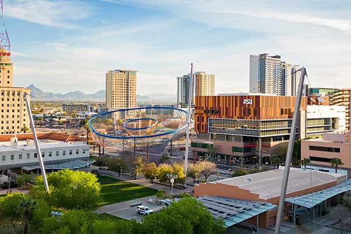
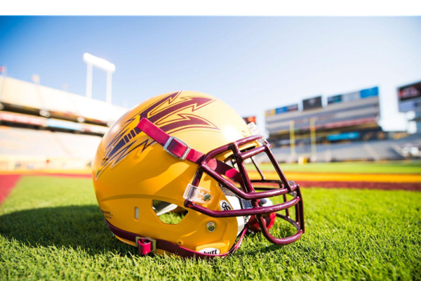
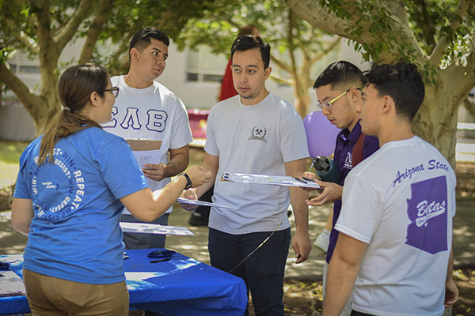
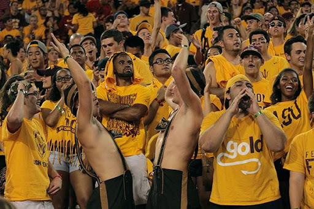

HOME
ACADEMICS
Student Life
NEWS
Explore ASU's Student Life
Discover programs and fields of study across all disciplines
See Below
Campus Facilities & Amenities
Tempe campus highlights:
Palm Walk, historic Old Main, Sun Devil Stadium (football), Desert Financial Arena (basketball), ASU Art Museum, ASU Gammage theater (Frank Lloyd Wright–designed).
Natural features:
Overlooks “A” Mountain (Hayden Butte).
Sustainability:
One of the most solar-powered universities in the nation.
Modern facilities:
Academic buildings, libraries, labs, gyms, sports fields, and student centers provide spaces for learning and recreation.

Athletics & Recreation

Division I sports:
Football, basketball, soccer, softball, and more (Pac-12 Conference).
Popular venues:
Sun Devil Stadium for football; Desert Financial Arena for basketball.
Student involvement:
Intramural and club sports, recreation centers, and fitness programs keep students active.
Example:
Women’s soccer competes at NCAA Division I level with full training facilities.
Clubs & Student Organizations
Wide variety:
Academic, cultural, arts, advocacy, service, and social interests.
Fraternities & sororities:
36 fraternities and 31 sororities, totaling around 6,000 students.
Opportunities:
Leadership, networking, and social activities through organizations.

Campus Culture & Traditions

Lively student life:
Homecoming, concerts, art shows, and community service events.
Community spirit:
Strong sense of belonging and engagement across campus.